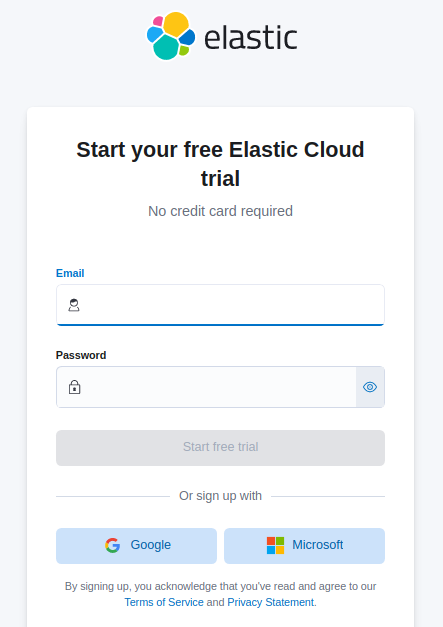
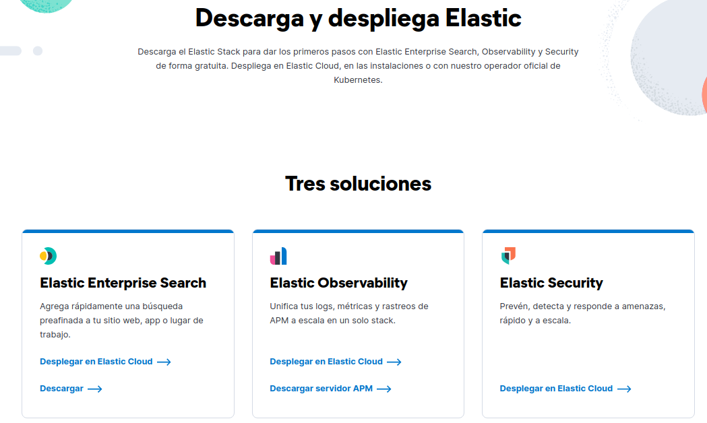
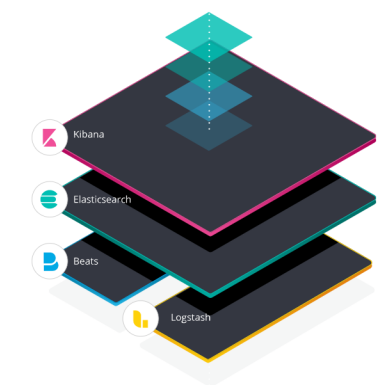
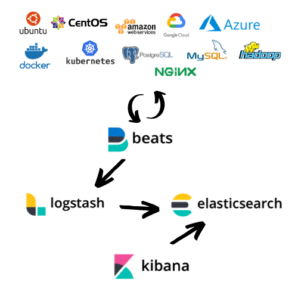
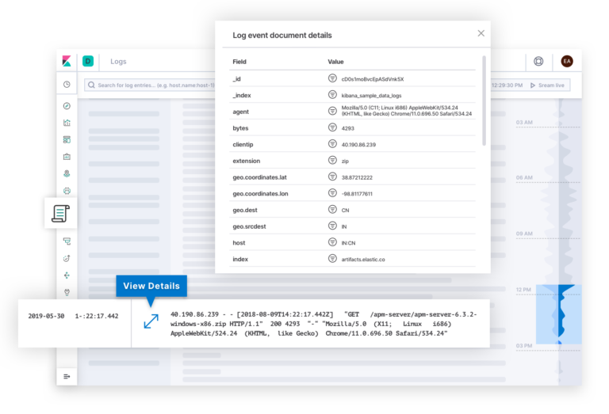
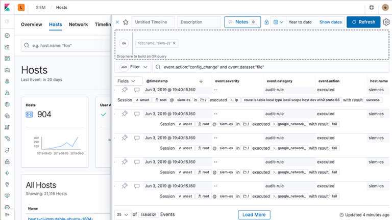
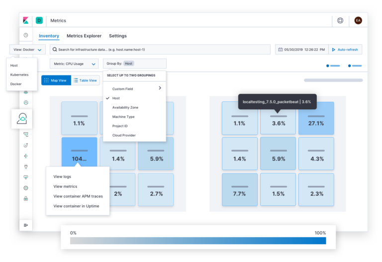

3.1 Elastic Stack (Open Source)
1. Introducción
La pila ELK, conocida como Elastic Stack (es la evolución del ELK Stack), es una colección de 5 herramientas de código abierto: Elasticsearch, Kibana, Logstash, Beats y X-Pack.
Elastic 8.0 está disponible en Elastic Cloud y es la única oferta de Elasticsearch hospedado que incluye todas las características nuevas en esta versión más reciente.
Se puede realizar una prueba gratuita de 14 días de Elastic Cloud. En nuestro caso, se usará la versión autogestionada del Elastic Stack de forma gratuita.
|  |  |
{kind=link}
{kind=link}

Figura 1. Pila Elastic Stack.
Como se puede observar en la figura superior, Elastic Stack está por varios elementos distintos:
1. Elasticsearch - Corazón del Elastic Stack.
ElasticSearch es un servicio de base de datos opensource NoSQL diseñado para realizar búsquedas entre grandes cantidades de datos. Es altamente distribuible y fácilmente escalable. Es accesible a través de una extensa API y tiene como objetivo realizar búsquedas extremadamente rápidas que respalden las aplicaciones.
Es por eso que se utiliza mucho en entornos de BigData, en donde se utilizan diversas fuentes de datos, aglutinando toneladas de información, y ElasticSearch es una solución óptima de alto rendimiento para extraer rápidamente aquella información que se desea.
La estructura de sus datos se basa en ficheros de texto en formato JSON.
Para comprender mejor Elasticsearch y su uso se definen a continuación los principales términos:
- Índice : Es una colección de documentos que tienen características similares. Por ejemplo, se pude tener un índice para un cliente específico, otro para la información de un producto y otro para una estructura de datos diferente. En un solo clúster, se pueden definir tantos índices como se quieran. El índice es similar a una base de datos en un RDBMS.
- Documento: Un documento es una unidad básica de información que puede indexarse. Por ejemplo, se pude tener un índice sobre un producto y luego un documento para un cliente. Este documento se expresa en formato JSON (JavaScript Object Notation). Dentro de un índice, se pueden almacenar tantos documentos como se deseen.
Un documento se ve así:
{
"account_number": 654,
"balance": 12098,
"firstname": "Juan Carlos",
"lastname": "Requena",
"age": 38,
"gender": "M",
"address": "C/ Pintor Soler Blasco, 3",
"employer": "IES EL Caminas",
"email": "jcrequena@ciber.local",
"city": "Castellón",
"country": "Spain",
}
Query DSL: Elasticsearch proporciona un lenguaje DSL completo basado en JSON para definir consultas.
Una consulta sobre el documento anterior se vería así:
{
"query": { "match": { "firstname": "Juan Carlos" } }
}
Nodo: Es un servidor que forma parte de un clúster, este almacena los datos y participa en las capacidades de indexación y búsqueda del clúster. Al igual que un clúster, un nodo se identifica con un nombre.
Clúster: Es una colección de uno o más nodos que en conjunto contiene todos los datos donde se busca Puede haber N nodos en el mismo clúster. Elasticsearch funciona como un entorno distribuido con la replicación entre nodos.
Fragmentos (Shards) y réplicas: Elasticsearch proporciona la capacidad de subdividir el índice en varias piezas llamadas fragmentos o shards. Cuando se crea un índice, se puede definir la cantidad de fragmentos que se desea. Cada fragmento es en sí mismo un “índice” totalmente funcional e independiente que se puede almacenar en cualquier nodo del clúster. Los fragmentos son importantes porque permiten dividir horizontalmente el volumen de datos, potencialmente para realizar operaciones de paralelización aumentando así el rendimiento. Los índices se puedan dividir en fragmentos y cada uno tener cero o más réplicas.
2. Kibana
Kibana es una aplicación web construida con Node.js para buscar, visualizar e interactuar con información almacenada en ElasticSearch.
El obetivo es filtrar y ver documentos, pero también ofrece análisis automáticos en tiempo real, un algoritmo de búsqueda muy flexible y diferentes tipos de vistas como histogramas, gráficos, diagramas circulares, para los datos. En el panel de control las diversas visualizaciones interactivas pueden combinarse para formar una imagen general dinámica que permita su filtrado y análisis.
Las distintas secciones que forman Kibana son:
- Discover: Permite interactuar con la información almacenada. Se puede filtrar y buscar registros en un intervalo de tiempo determinado para visualizar documentos. Se pueden almacenar las consultas para volver a usarlas en otras ocasiones.
- Visualize: Se pueden crear, modificar y ver propias visualizaciones personalizadas para usarse en un dashboard.
- Dashboard: Pantalla donde se pueden crear, modificar y ver propios cuadros de mando personalizados basados en visualizaciones y búsquedas. De este forma, se tiene una vista rápida de distintas maneras de organizar la información.
- Dev Tools: UI para interactuar con la API Rest de Elastic Search.
3. Logstash
Logstash es una pipeline de procesamiento de datos open source y que permite ingestar datos (JSON,CSV…) de múltiples fuentes simultáneamente y enriquecerlos y transformarlos antes de que se indexen en Elasticsearch. Se usa para agregar y procesar datos y enviarlos a su repositorio final, la mayoría de las veces Elasticsearch.
A medida que los datos van de la fuente al repositorio, los filtros de Logstash analizan cada evento, identifican los campos por nombre para construir una estructura y los transforman para tener en un formato común para poder realizar un análisis más poderoso.
{kind=link}
4. Beats
Es la plataforma para transportar datos dentro del stack. Los Beats son un conjunto de Data Shippers que entregan datos directamente a Elasticsearch y/o Logstash y que por tanto actúan como agentes. Actualmente, existen los siguientes agentes en la página oficial:
- Filebeat: Son agentes que transportan los datos, en este caso los archivos de logs/registro hacia logstash para su procesamiento y posterior almacenamiento.
- Metricbeat: Obtienen métricas de sistema, como CPU, RAM, Disco y muchos modulo disponibles cómo Docker, NGINX, etc.
- Heartbeat: Generalmente se usa para monitorizar la disponibilidad de un recurso. Puede realizar “pings” por ICMP, TCP y HTTP.
- Packetbeat: Decodifica protocolos de red, correlaciona peticiones con respuetas. Los protocolos incluidos son ICMP, DNS HTTP, AMQP y de otras aplicaciones como MySQL, Memcached, MongoDB, RPC.
- Winlogbeat: Registros de eventos (logs) de Windows.
- Auditbeat: Datos de auditoria, se integra con el modulo del kernel de Linux audit. También monitoriza en tiempo real la integridad de archivos, usando hashes.
- Functionbeat: Para implementarse como función en una plataforma FaaS, con el objetivo de recopilar, monitorizar y enviar datos de servicios en la nube.
5. X-Pack
Es un módulo premium y contiene módulos de:
- Seguridad: Posibilidad de manejar usuarios y roles, integración con LDAP y SAML. Cifrado de la comunicación con SSL/TSL.
- Alertas: alertas sobre cambios en los datos. Básicamente si lo puedes buscar, lo puedes alertar. Vía Email, Slack, Pagerduty, Hipchat y cualquier webhook.
- Monitorización: Monitorizar el rendimiento así como el uso de los componentes de Elastic Search,KIbana y Logstash.
- Informers: Generar, programar, compartir documentos, visualizaciones o dashboards enteros. Posibilidad de crear automáticamente el envío de informes basados en reglas.
- Graph - Análisis de gráficos: Existen posibles relaciones entre los documentos de Elastic Stack: enlaces entre personas, lugares, preferencias, productos, lo que sea. Graph ofrece un enfoque orientado a las relaciones que permite explorar las conexiones en los datos.
- Machine learning: Ejecutar tareas de machine learning en los datos para visualizar y prevenir anomalías.
Con la unión de las cinco herramientas se tiene una herramienta que ingesta logs u otros archivos de datos con Logstash, los almacena en la base de datos de Elasticsearch y Kibana accede a ellos para visualizarlos de una forma gráfica. De esta forma, se centralizan los logs de las aplicaciones y se pueden identificar problemas en los servidores o aplicaciones, ya que permite realizar búsquedas en todos los logs desde un solo lugar.
En el siguiente diagrama se puede ver el flujo que seguirán los logs de las aplicaciones para ser centralizados usando el Elastic Stack:

Donde la secuencia es la siguiente:
- Beats obtiene los logs de las aplicaciones y los envía a Logstash.
- Logstash recibe los datos, los transforma y los almacena en Elasticsearch.
- Elasticsearch indexa los datos, este es el repositorio donde se almacenarán los logs.
- Kibana accede a Elasticsearch para realizan consultas y análisis.
En los siguientes apartados, se describe el proceso de instalación de estas 5 herramientas.
2. ¿Porqué centralizar los logs?
En muchas empresas se están utilizando los logs de seguridad para detectar incidentes maliciosos. Muchos de ellos están recopilando demasiados datos y a menudo miles de millones de eventos.
Una ingente cantidad de datos no proporciona información si no se pude responder adecuadamente a los mismos, es por ello que se hace necesario disponer de un sistema centralizado de gestión de logs que puede ayudar a dar respuesta.
Antiguamente los logs se utilizaban en gran medida como una herramienta de solución de problemas. Con el tiempo, han ido evolucionado para desempeñar un papel mucho más amplio.
Los logs se han convertido en una parte crucial de la optimización del rendimiento del sistema y de la red, el seguimiento de las acciones del usuario, el suministro de datos para la investigación de acciones sospechosas y la monitorización proactiva.
Los logs de fácil acceso pueden dar advertencias y oportunidades sobre problemas antes de que causen daños irreparables.
{kind=link}
3. ¿Para qué usar Elastic Stack?
Gracias a la velocidad y escalabilidad de Elasticsearch y su capacidad de indexar muchos tipos de contenidos hace que sea útil para una variedad de casos de uso:
- Búsqueda de aplicaciones.
- Búsqueda de sitio web.
- Búsqueda Empresarial.
- Logging y analíticas de log.
- Métricas de infraestructura y monitorización de contenedores.
- Monitorización de rendimiento de aplicaciones.
- Análisis y visualización de datos geoespaciales.
- Analítica de Seguridad.
- Analítica de Negocios.
A se describen 3 casos de ejemplo de uso de esta esta tecnología:
1. Logs
El ecosistema creado alrededor de Elasticsearch lo ha convertido en una de las soluciones de centralización de logs más fáciles de implementar y escalar. Desde Beats, hasta Logstash, Elasticsearch ofrece muchas opciones para capturar datos donde sea que estén e indexarlos. A partir de ahí, herramientas como Kibana brindan la capacidad de crear paneles y análisis completos.

2. Análisis de seguridad
Si se utiliza Elasticsearch como un gestor centralizado de logs, esta misma funcionalidad permitirá trabajar sobre datos de seguridad. Así es muy común ver cómo equipos de seguridad disponen de sistemas SIEM junto a un cluster de Elasticsearch, el cual almacena gran volumen de información a poder ser analizada a lo largo del tiempo.

3. Datos y métricas del eventos
Elasticsearch funciona en datos de series de tiempo como métricas y eventos de aplicaciones. Esta es otra área donde el ecosistema de Beats permite capturar fácilmente datos de aplicaciones comunes. Independientemente de las tecnologías que se utilicen para construir las aplicaciones, existe una gran posibilidad de que Elasticsearch tenga los componentes para obtener métricas y eventos de forma inmediata.

4. Uso Eslastic Stack en Empresas
Existen empresas que cuentan con técnicos certificados para implantar Elastic Stack. Estas empresas, trabajan para entidades como: rtve, Iberia, Banco Sabadell, OSFAM Intermon, etcétera.
Obra publicada con Licencia Creative Commons Reconocimiento No comercial Compartir igual 4.0